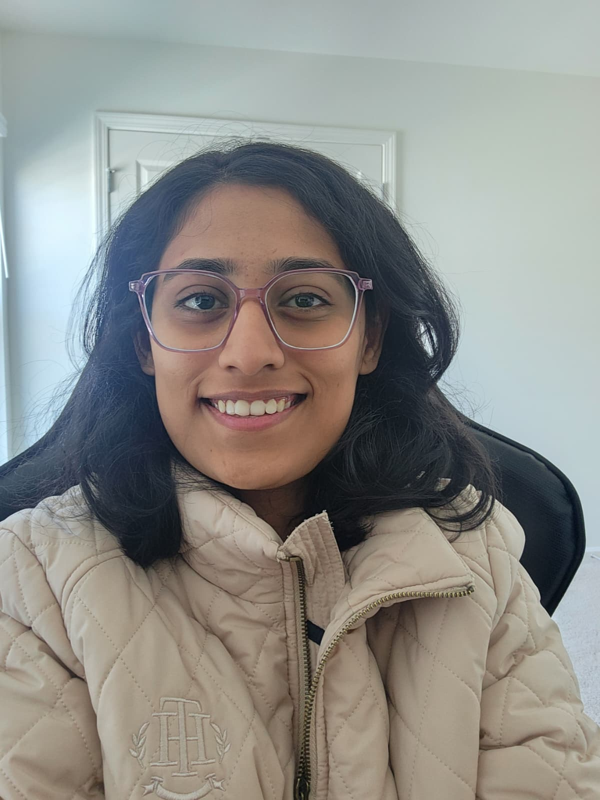
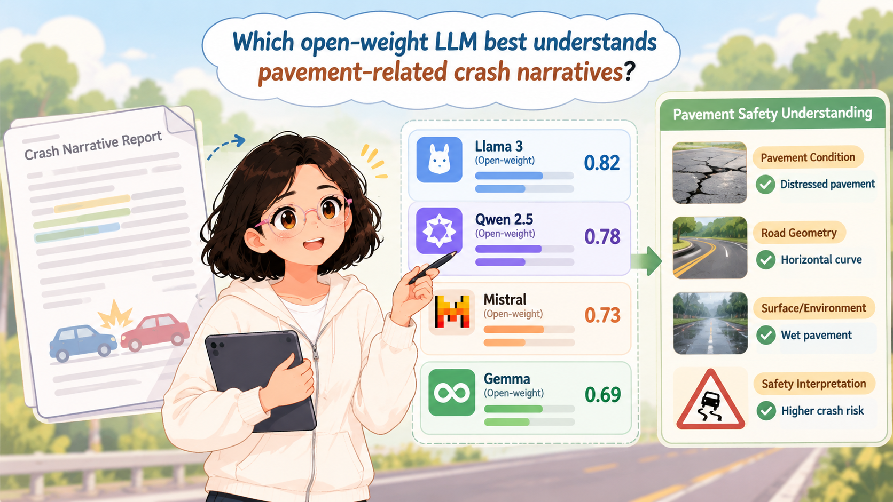
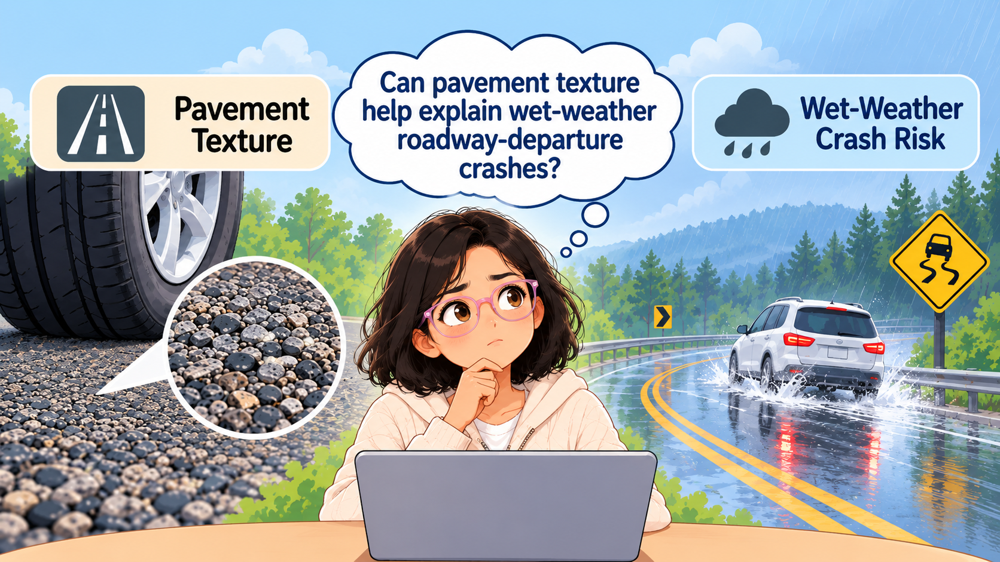
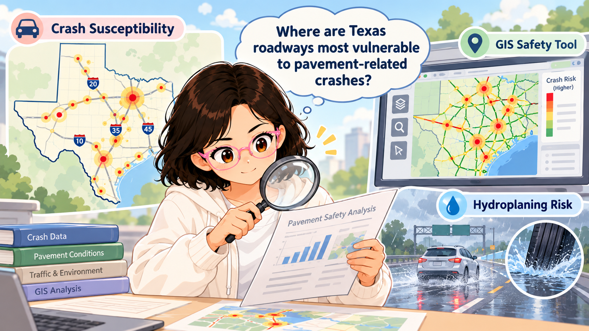
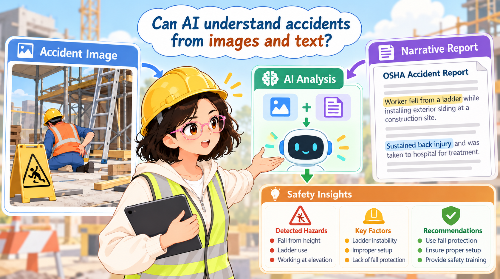
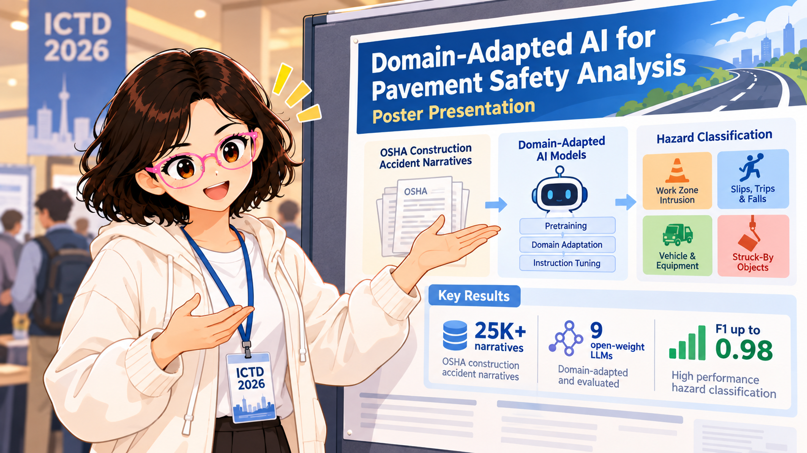
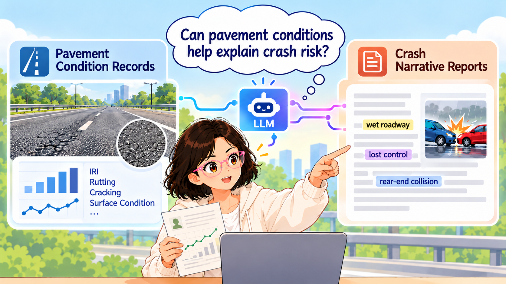
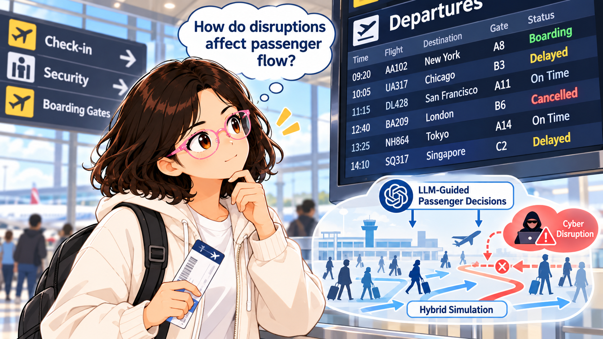
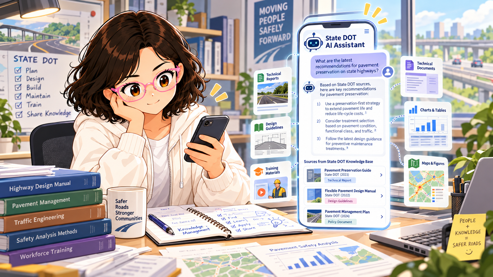
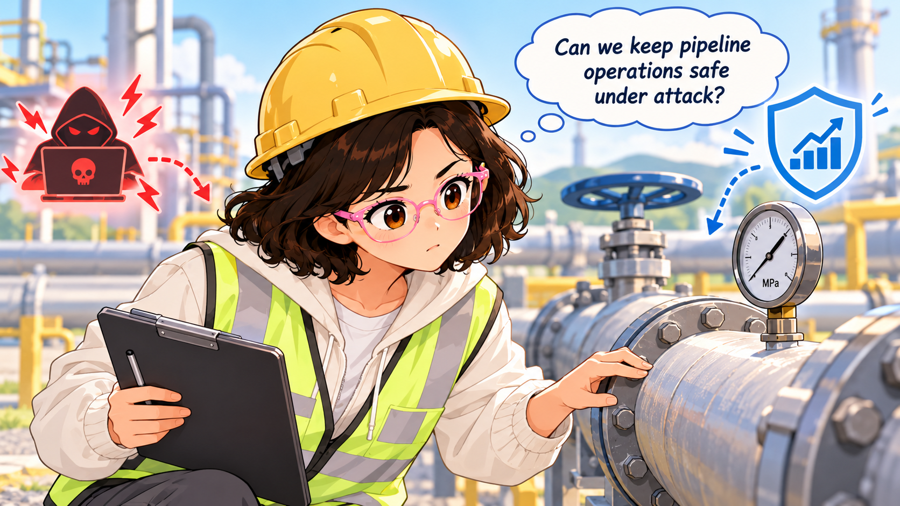

Between the Lines
A little collection of poems, thoughts, and everything I sometimes find easier to express in words.
Read my poems →Hi, Tejaswini here, nice to e-meet you :)
I am an interdisciplinary researcher currently pursuing a Master's in Computer Science (Thesis) at the University of Houston, with an expected graduation in May 2027. I am also a Research Assistant at the USDOT Tier 1 UTC Transportation Cybersecurity Center for Advanced Research and Education (CYBER-CARE), working with Prof. Lu Gao.
I completed my undergraduate degree in Computer Engineering at Vishwakarma Institute of Technology, India (2020–2024). I subsequently gained a year of research experience as a Graduate Research Assistant under Dr. Santosh Shinde.
With a strong foundation in Artificial Intelligence and Computer Science, my research interests focus on integrating AI with Safe Systems approaches to improve transportation safety.










I have been lucky to have some amazing mentors throughout my journey, and I would love to pay that forward by helping and mentoring junior students whenever I can. Feel free to reach out anytime!
As I continue exploring transportation engineering, I am building on my computer science background through coursework and professional learning.
Opted for this course to strengthen my understanding of the intersection of data analysis and construction management.
Studying for the RSP1, with a focus on road safety basics and the human side of transportation safety.
A little glimpse of who I am when the laptop is closed.
A little collection of poems, thoughts, and everything I sometimes find easier to express in words.
Read my poems →
Recently started running and tracking my little adventures on Strava. Still figuring out the runner's high, lol!

No choreography needed. Just play a good song, and I'll probably be the first one dancing!

Extroverted by nature. I can talk for hours, and somehow, I'll get you talking for hours too!